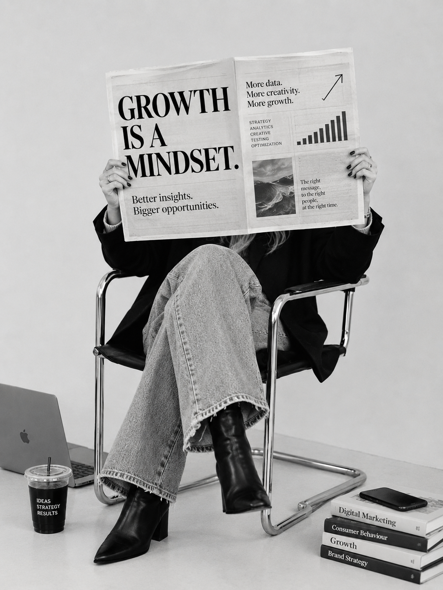

PORTFOLIO
Creative • Growth • Performance
Growth Marketing Berghs
✶Hi! I'm Lycke, a Growth Marketing student at Berghs School of Communication with a background in media and communication studies at Lund University. Through some hands-on experience with social media marketing I started to become curious about what happens beyond the content itself. What makes people engage, what drives results, and why some ideas work better than others. That curiosity opened my eyes to Growth Marketing and the possibilities of combining creativity with data and strategy. Now, I'm building on that curiosity at Berghs, learning how to turn insights into smarter marketing decisions.
